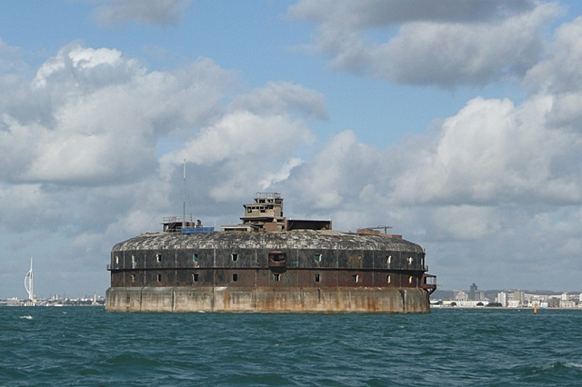

Horse Sand Fort
Horse Sand Fort is one of the larger Royal Commission sea forts in the Solent off Portsmouth, Hampshire, England. The fort is one of four built as part of the Palmerston Forts constructions. It is 200 feet (61 m) across, built between 1865 and 1880, with two floors and a basement and armour-plated all round.

By Graham Horn, CC BY-SA 2.0, Link
History
Horse Sand Fort was designed by Captain E. H. Stewart, overseen by Assistant Inspector General of Fortifications, Colonel W. F. D. Jervois. Construction work began in 1865, and the fort was completed in 1880, long after the threat of a seaborne invasion from France had passed, at a cost of £424,694.
The original armament was to have been forty five 10-inch and 44 12.5-inch rifled muzzle-loading (RML) guns on the gun floors with 10 12-inch RMLs mounted on the roof in five turrets. In fact the turrets were never built and the limited space meant the 12.5-inch guns had to be operated with less than full charges of powder. In 1882, 12-inch rifled breech-loading guns were placed in alternate bays.
Horse Sand Fort was built on a ring of masonry consisting of large concrete blocks with an outer skin of granite blocks, the interior being filled with clay and shingle and covered with a thick layer of concrete. The lower foundation walls of the fort are 18 metres (59 ft) thick. The fort is split into three levels with the top measuring 62.4 metres (204 ft 9 in) in diameter. The floors would have originally provided storage of armoury and guns and the things needed to sustain the men that were stationed on site. The top of the fort consisted of a lighthouse and various chimneys and ventilators. The fort has its own artesian well which provided fresh water. The seaward side of the fort was covered in a heavy iron-armoured plating to protect it from seaborne attack. Access to the fort was by a wooden-decked landing stage supported on cast-iron piles.
In the late 19th century the Solent forts were painted in a black and white checkered paint scheme as an early form of dazzle camouflage. In its unrestored state remains of this pattern are still visible on parts of Horse Sand Fort.
During the Second World War extensive submarine defences were built in the form of large concrete blocks running about 1.8 metres (5.9 ft) below sea level from the fort to the shore at Southsea. With only a single narrow gap to allow small craft to pass through, this barrier (and a much shorter one running south from No Man's Land Fort towards Ryde Sands) remains as the cost of demolition is deemed too high.
In March 2012, the fort was purchased by AmaZing Venues who operate the venue under the Solent Forts brand (owners of No Man's Land Fort and Spitbank Fort) and is to be converted into a museum.